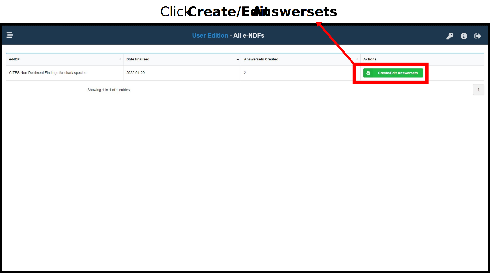
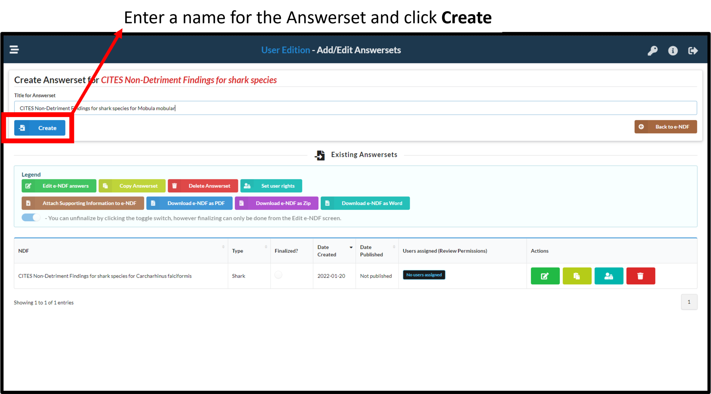
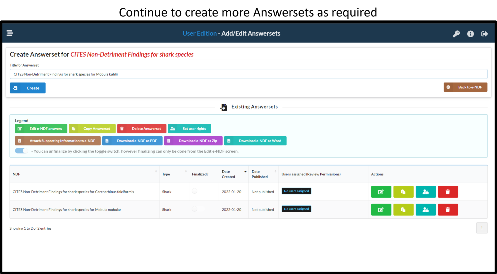

1 Developing an CITES NDF
To begin an e-NDF, the NDF admin needs to initialise an Answerset. The steps involved are illustrated below.
1.1 Select an NDF to fill
Select an NDF to create an Answerset 
1.2 Name the Answerset
Edit the name of the Answerset - ensure the name is descriptive and clear (eg. ‘NDF for silky sharks - 2022’) 
1.3 Create Answersets as needed

1.4 Next steps
Once an Answerset are created, the NDF admin can proceed with assigning users to enter data into the respective NDF.
Note:If users and usernames have not been created, the admin will first need to create users.